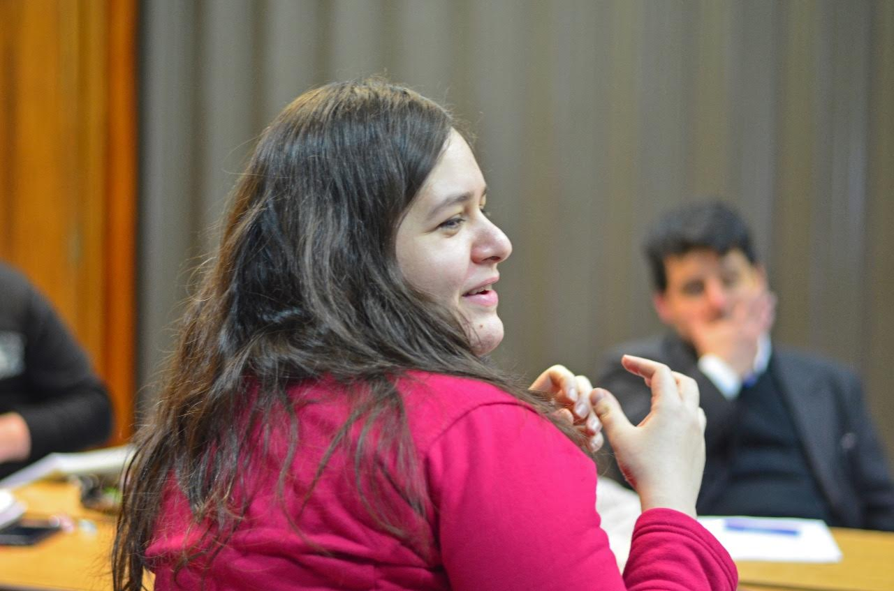

Marisa Buschiazzo | WDD 130
Hello! I'm Marisa, from Argentina. I'm a student of Computer Programming and hope one day to work as a programmer in plenty projects including mine ones. Welcome to my first website!
Hello! I'm Marisa, from Argentina. I'm a student of Computer Programming and hope one day to work as a programmer in plenty projects including mine ones. Welcome to my first website!